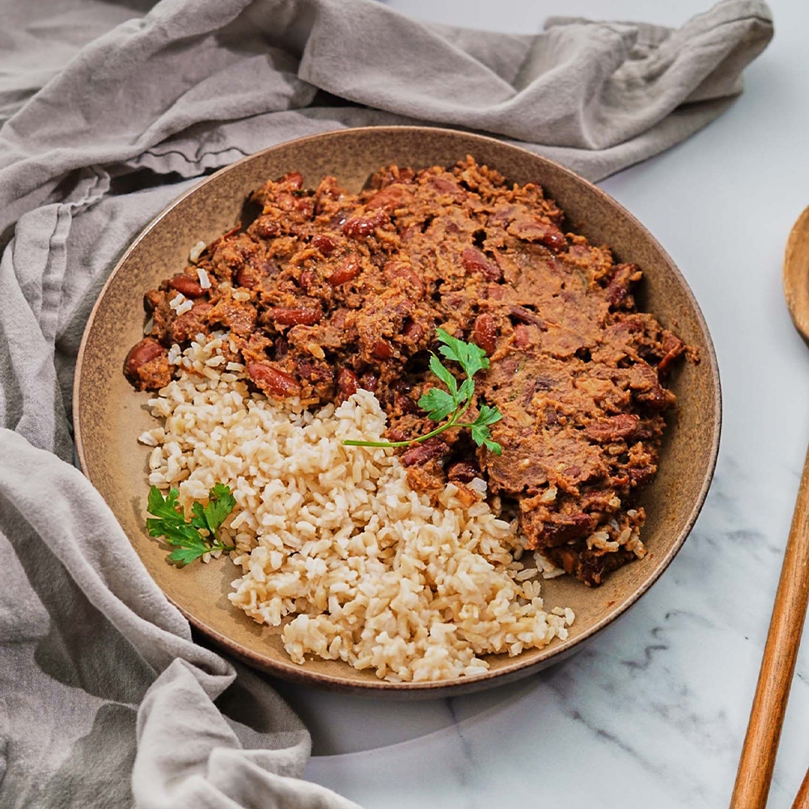

Cajun Style Beans and Rice

Description
A nice yummy dish consisting of beans and rice!
Ingredients
-
White Rice or Brown Rice
- Oil
- vegetables
- Fresh Parsley
- Red Kidney Beans
Instructions
- Rinse and drain kidney beans
After they have soaked overnight
- Sautee onion, bell pepper and celery
In a large pot over medium heat for 10 minutes
- Add in seasonings
add your parsley, hotsauce, salt and pepper and whatever else seasonings you like!
- Pour in kidney beans, bay leaves and veggie broth!
bring to a boil then cover and lower the heat to a simmer and let everything cook
for about an hour and 15 minutes
then remove the lid and let it continue to simmer for 15 minutes.
- Prepare your rice
while the beans are cooking.
- Blend 1/4 of the cooked beans in a blender
Blend until smooth.
- Serve and enjoy!